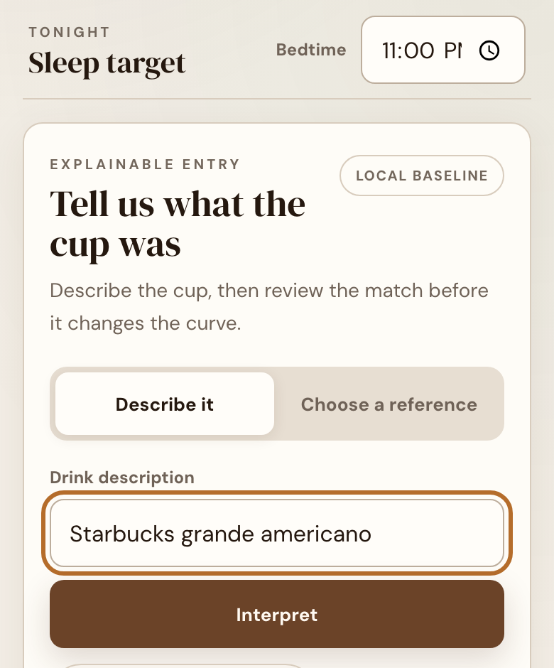
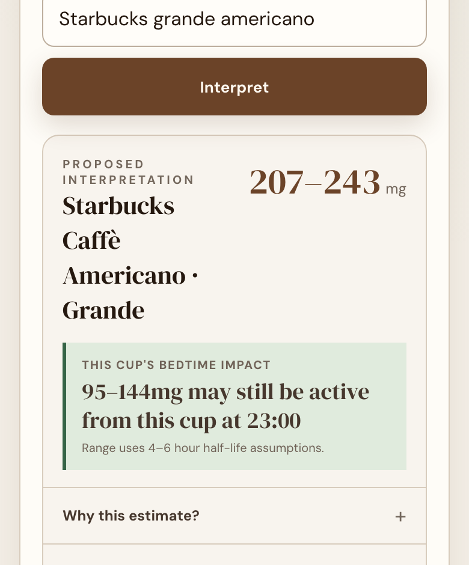

用必要信息建立个人参考，而不是默认所有人相同。
Caffeine
Check
30-second overview
A useful answer depends
on what happened today.
咖啡因建议经常停留在统一上限，但用户真正面对的是一个更具体的问题：以我的情况、现在的时间和今天已经喝过的东西，我还适合再喝一杯吗？
Caffeine Check 把个人资料、当日记录与饮品估算放在同一条判断链里。它不替用户做医疗决定，而是把分散信息整理成一条可理解、可继续修正的参考。
What the product actually does
输入一杯，确认识别，
再看它怎样改变今晚。
三步都在同一页完成：写下或选择一杯饮品、核对系统识别到的名称与估算区间、再把它加进当天曲线。识别错了可以改；已记进当天的饮品也可以移除。核心计算不依赖模型是否可用。


Product logic
先保证核心判断稳定，
再让输入变得自然。
产品逻辑与表达层被刻意分开：个人基线、当天累计与状态反馈由明确规则负责；自然语言只帮助用户更快地记下一杯饮品，不应该让核心计算依赖模型是否可用。
每次记录都会改变当天余量和后续判断。
用可读状态解释数字，而不是只显示一个总量。
Three decisions
One decision, not a dashboard
首页先回答“还能不能喝”，再提供记录与细节，避免把日常工具做成需要学习的数据面板。
Natural input, visible interpretation
自然语言降低记录成本，但系统必须把识别到的饮品和估算量明确还给用户，允许发现并修正误差。
Reference, not false precision
结果使用区间、状态和解释建立信任，不把饮品估算包装成医学级精确结论。
Reflection
It works as a daily utility.
Its confidence still has boundaries.
What the build proves
核心路径已经可以运行：建立个人资料、记录当天摄入、查看累计状态，并在浏览器中保留连续使用所需的数据。
What needs another iteration
饮品数据库覆盖、不同杯型的估算误差、提示语气与长期使用习惯仍需要更多真实使用反馈；下一轮应优先验证这些边界，而不是增加更多功能。